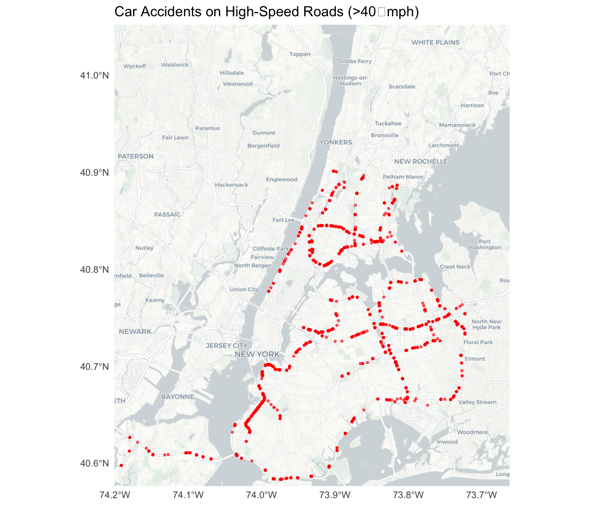
STAT 605 Final Presentation
Research Question: How did COVID-19 affect motor vehicle collision patterns in New York City?
Datasets:
Key Variables:
Number of Monthly Vehicle Collisions in NYC:
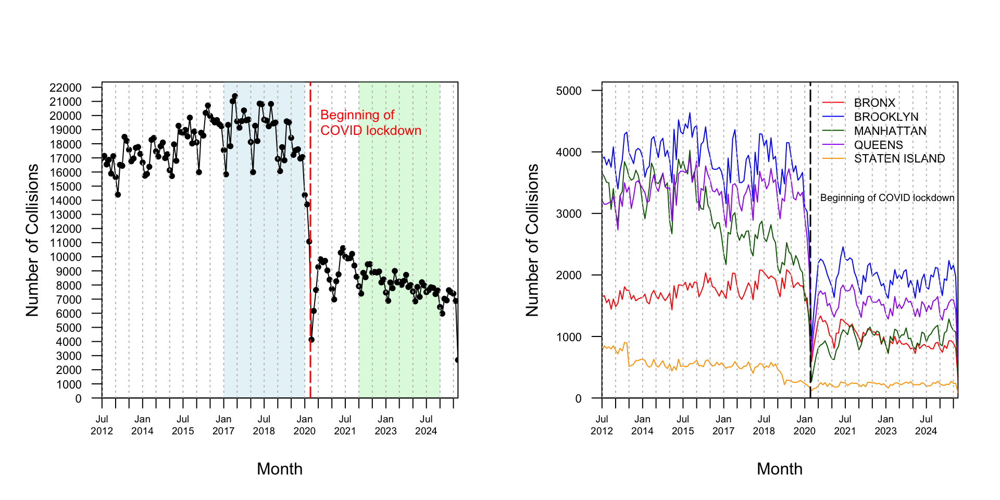
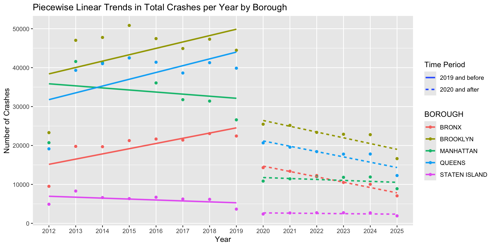
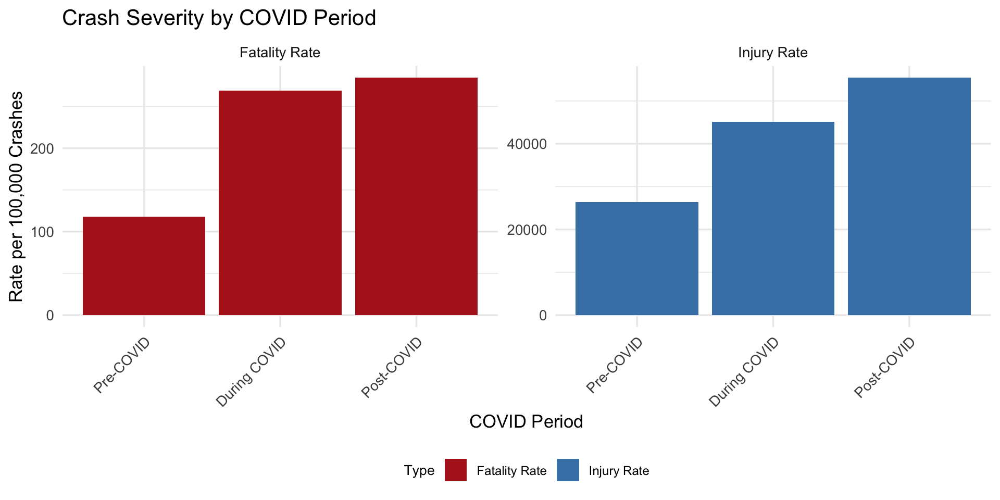
Key Finding: Crash severity increased during and after COVID‑19
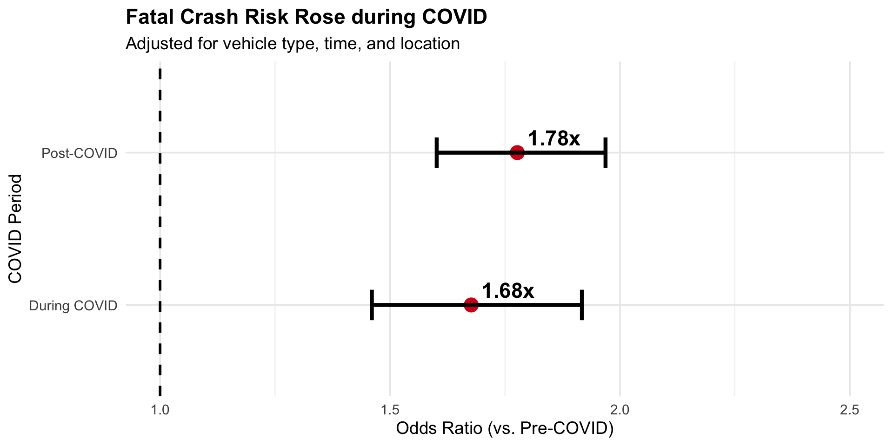
Key Finding: Even controlling for other factors, crashes became 67-78% more likely to be fatal
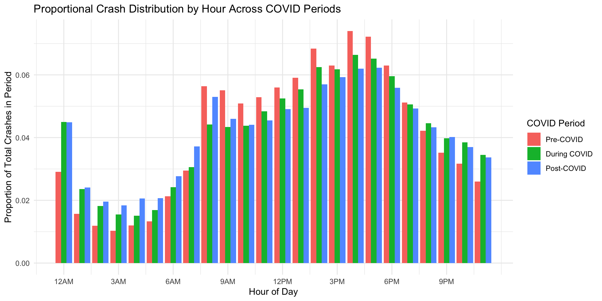
Rush‑hour peaks dipped slightly during COVID but largely returned afterward
How Factors Changed:
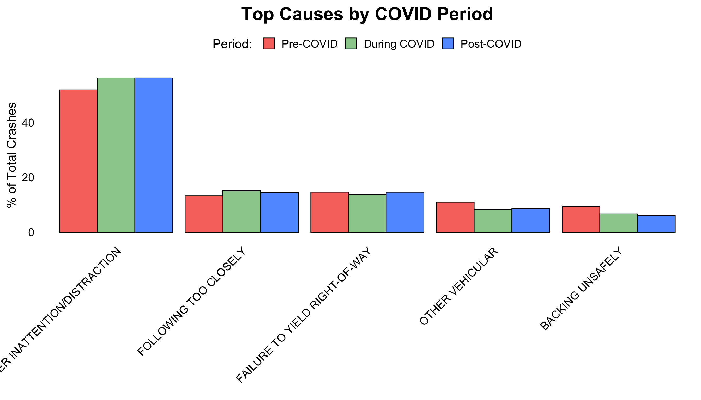
Key Finding: Driver inattention and distraction are the leading cause and became more common during COVID
Data Processing:
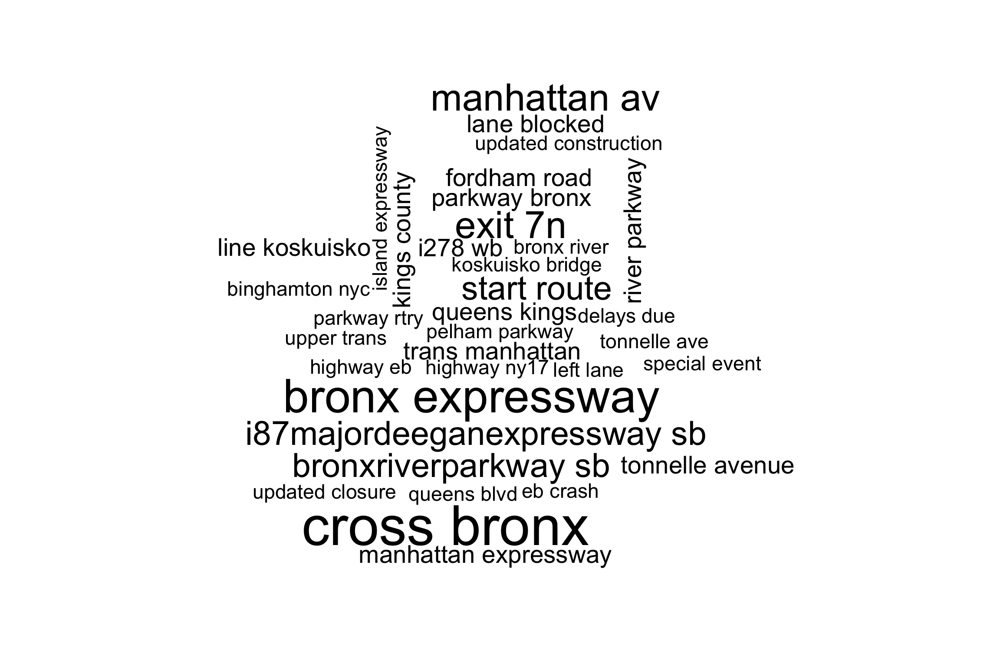

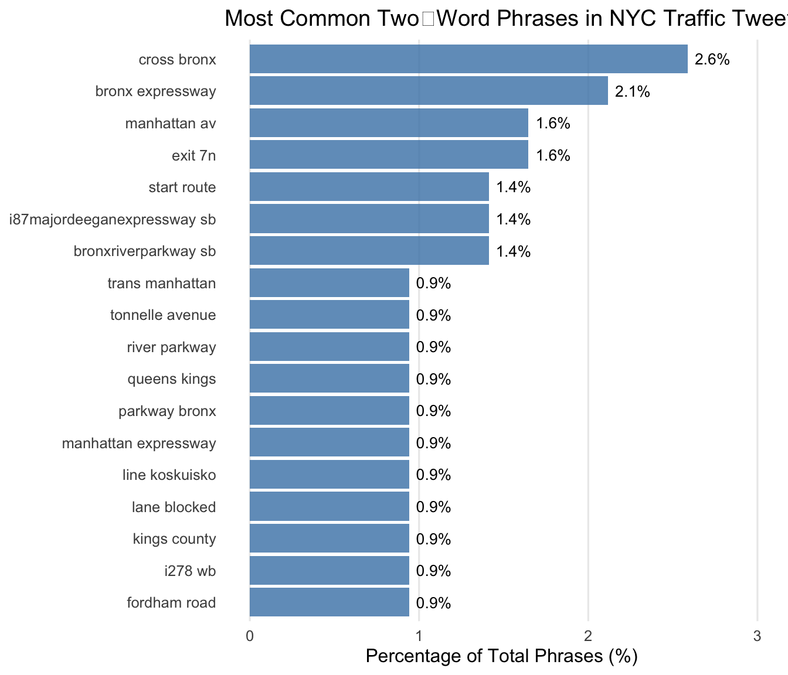
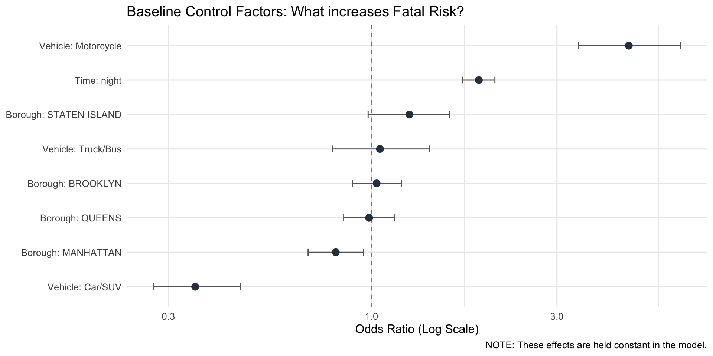
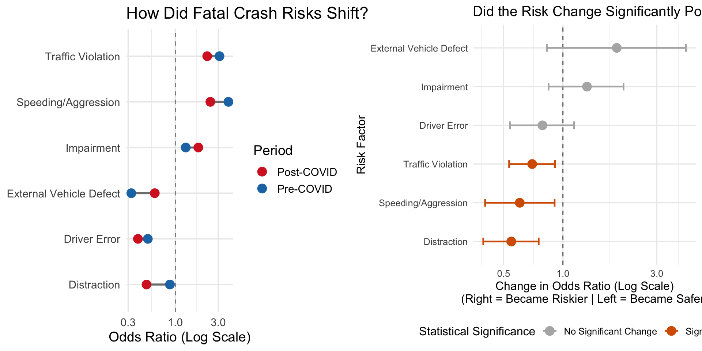
Group 1: Astha Singh, Franco Bosetti, Louis Clarke, Lindsey Russ